마이크로프로세서 하루 완성
교재 129쪽 · 순서대로 내려가면 됩니다 · 예제마다 ① 핀 연결 적기 → ② 코드 한 줄씩 읽기 → ③ 숫자 바꿔 예측
0. 도입 — 아두이노는 "작은 컴퓨터가 한 칩에 다 들어간 것" (p1~8)
CPU는 두뇌만 있는 칩이고, 아두이노 칩(MCU)은 두뇌·메모리·입출력이 한 칩에 다 들어 있다.
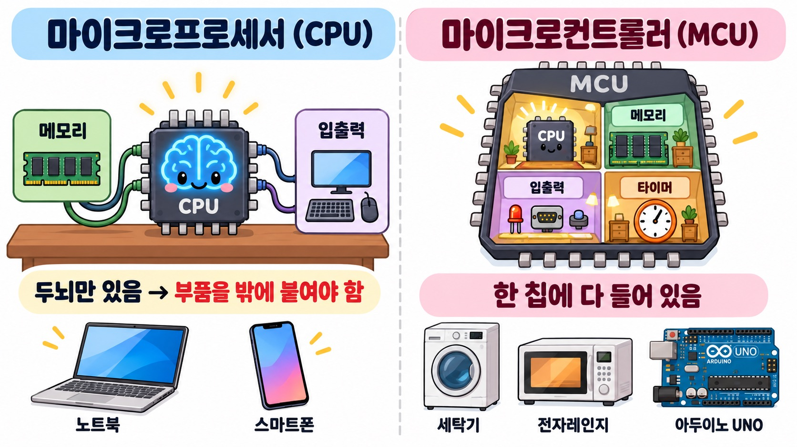
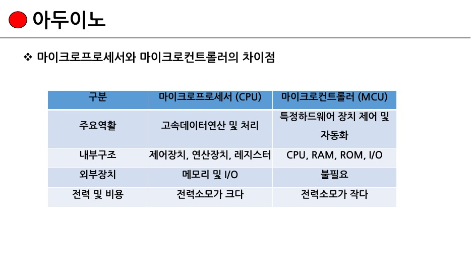
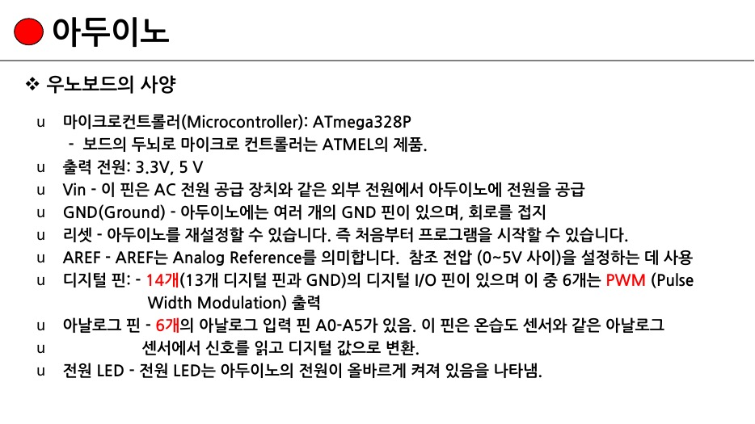
교재에 없지만 먼저 알아야 하는 것
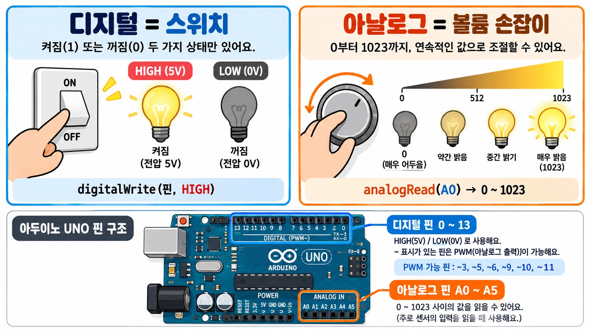
- 핀 = 아두이노 가장자리에 있는 구멍. 번호가 붙어 있고, 코드에서 그 번호로 부른다.
- GND = 전기가 돌아오는 길(0V). 모든 부품은 GND에 연결해야 회로가 닫혀서 동작한다.
- ~ 표시가 있는 핀(3, 5, 6, 9, 10, 11)만 세기 조절(PWM)을 할 수 있다.
void setup() { // 전원을 켜면 딱 한 번 실행 → 준비 단계 (핀 설정)
}
void loop() { // setup이 끝나면 무한 반복 → 실제로 하는 일
}1. DC 모터 속도 — 빠르게 켰다 껐다 해서 세기를 조절한다 (p10~31)
아두이노 핀은 켜짐(5V)과 꺼짐(0V)밖에 못 낸다. 그래서 아주 빠르게 켰다 껐다 해서 "평균 전압"을 만든다. 이게 PWM이다.
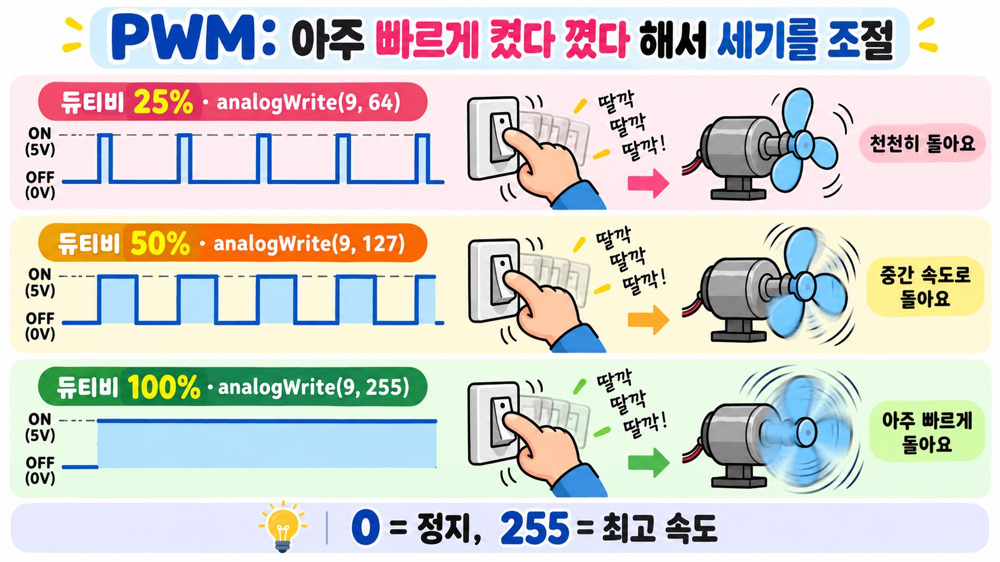
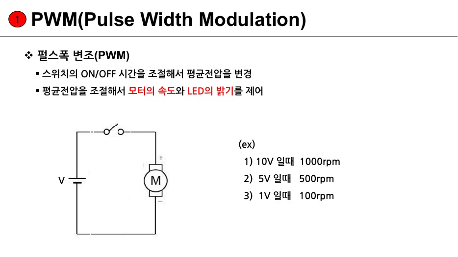
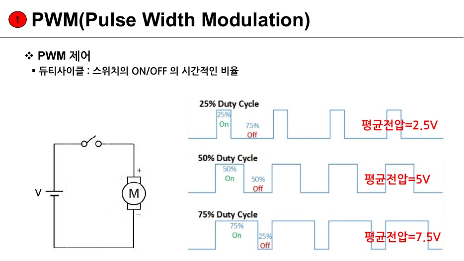
| analogWrite 값 | 켜진 비율 | 평균 전압 (5V 기준) | 모터 |
|---|---|---|---|
| 0 | 0% | 0V | 정지 |
| 64 | 25% | 약 1.25V | 느림 |
| 127 | 50% | 약 2.5V | 중간 |
| 255 | 100% | 5V | 최고 속도 |
예제 1 (p16~18) — 대표 예제, 이것만 깊게
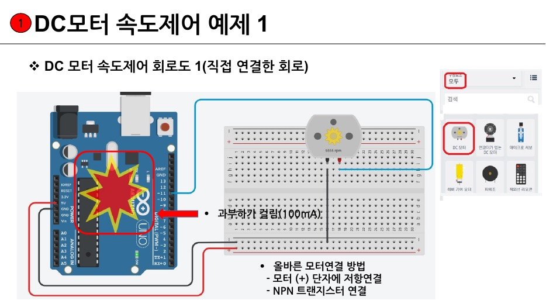
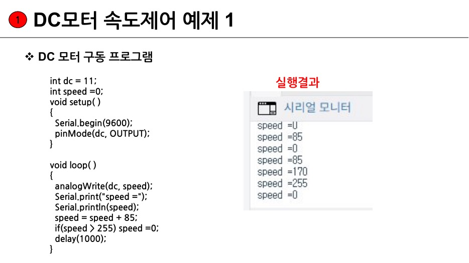
int dc = 11; // 모터는 11번 핀 (~ 있는 핀이라 PWM 가능)
int speed = 0; // 지금 속도, 처음엔 0
void setup() {
Serial.begin(9600); // PC 화면(시리얼 모니터)에 글씨를 보낼 준비
pinMode(dc, OUTPUT); // 11번 핀은 "내보내는" 용도
}
void loop() {
analogWrite(dc, speed); // 11번 핀에 speed 세기로 PWM 출력
Serial.print("speed =");
Serial.println(speed); // 화면에 현재 속도 표시
speed = speed + 85; // 0 → 85 → 170 → 255
if (speed > 255) speed = 0; // 255 넘으면 다시 0부터
delay(1000); // 1초 기다림
}예측해 보기: 85를 51로 바꾸면? → 0, 51, 102, 153, 204, 255 여섯 단계로 1초씩 빨라진다.
예제 2~4 — 앞 예제와 다른 점만
| 예제 | 쪽 | 새로 나온 것 |
|---|---|---|
| 2 | p19~22 | NPN 트랜지스터를 사이에 둔다. 아두이노는 트랜지스터에 "열어라"라는 신호만 주고, 큰 전류는 트랜지스터가 흘려준다 → 아두이노 보호. PWM은 9번 핀. |
| 3 | p23~27 | Serial.read()(글자 1개 읽기), Serial.parseInt()("153"을 숫자 153으로), constrain(speed, 0, 255)(범위 밖 값을 0~255로 잘라냄) |
| 4 | p28~31 | 시리얼로 입력한 값으로 속도 제어하는 응용 |
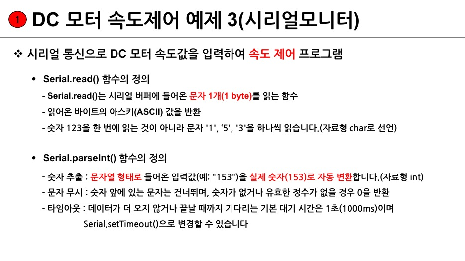
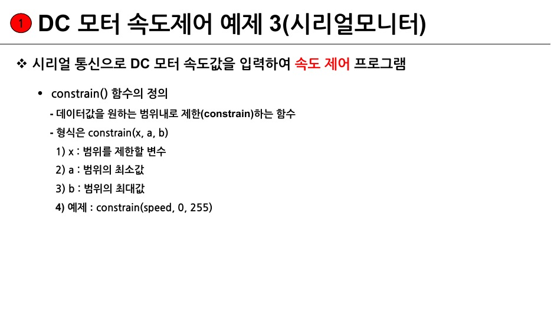
2. DC 모터 방향 — 전기가 흐르는 방향을 뒤집으면 모터도 반대로 돈다 (p32~61)
스위치 4개를 H 모양으로 배치해서, 어느 두 개를 켜느냐에 따라 전기가 모터를 왼쪽→오른쪽 또는 오른쪽→왼쪽으로 지나가게 만든다.
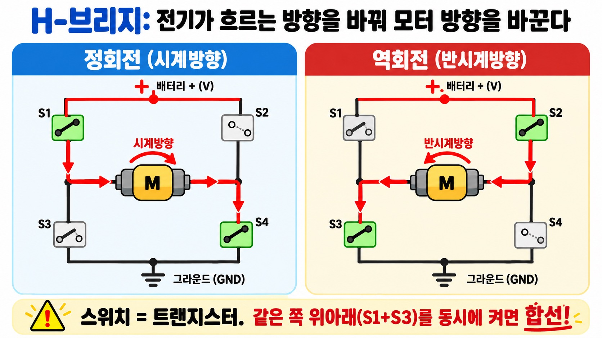
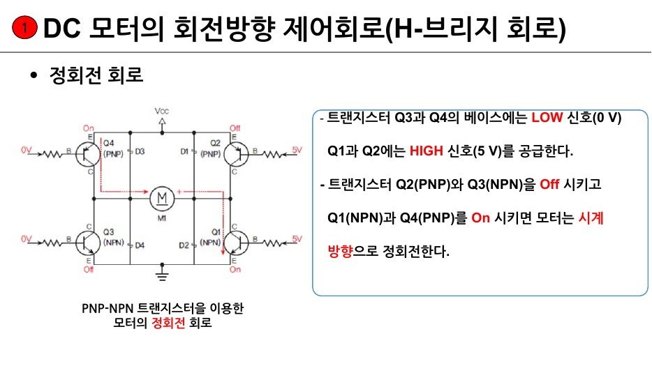
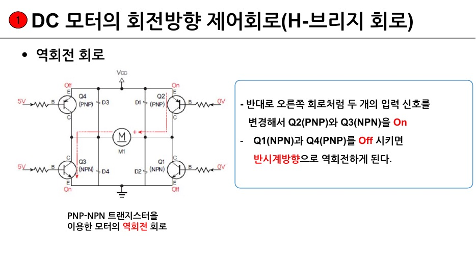
교재 회로의 Q1~Q4가 그림의 스위치다. 트랜지스터는 "전기로 켜고 끄는 스위치"라고만 알면 충분하다.
모터 드라이버 L293D — H-브리지를 칩 하나에 넣은 것 (p37~41)
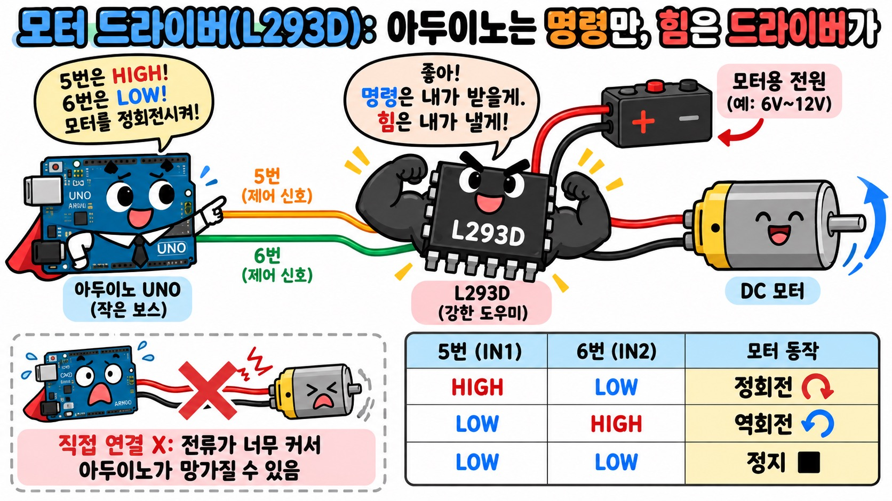
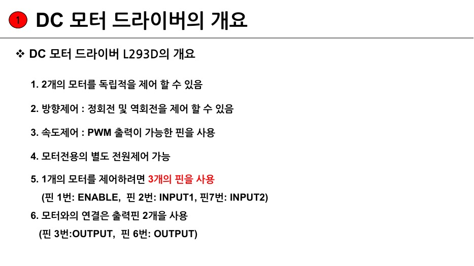
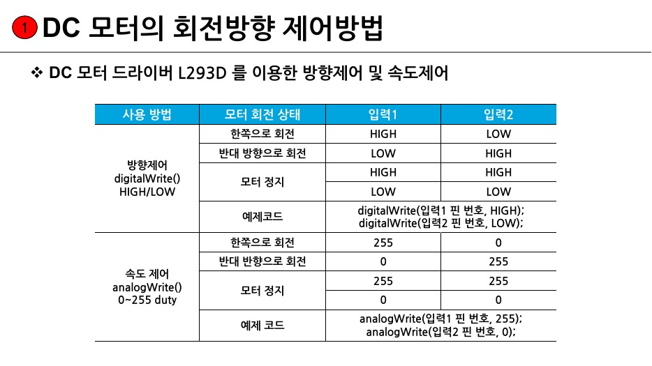
| 입력1 | 입력2 | 모터 |
|---|---|---|
| HIGH | LOW | 한쪽으로 회전 |
| LOW | HIGH | 반대쪽으로 회전 |
| HIGH | HIGH | 정지 |
| LOW | LOW | 정지 |
외우는 법: 두 입력이 다르면 돈다, 같으면 선다. 방향만 바꿀 땐 digitalWrite, 속도까지 바꿀 땐 HIGH 대신 analogWrite(핀, 0~255).
예제 5 (p42~45) — 대표 예제
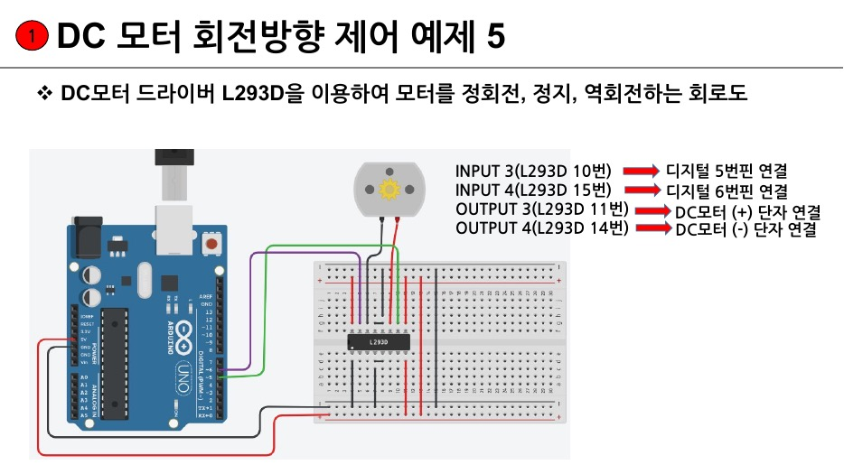
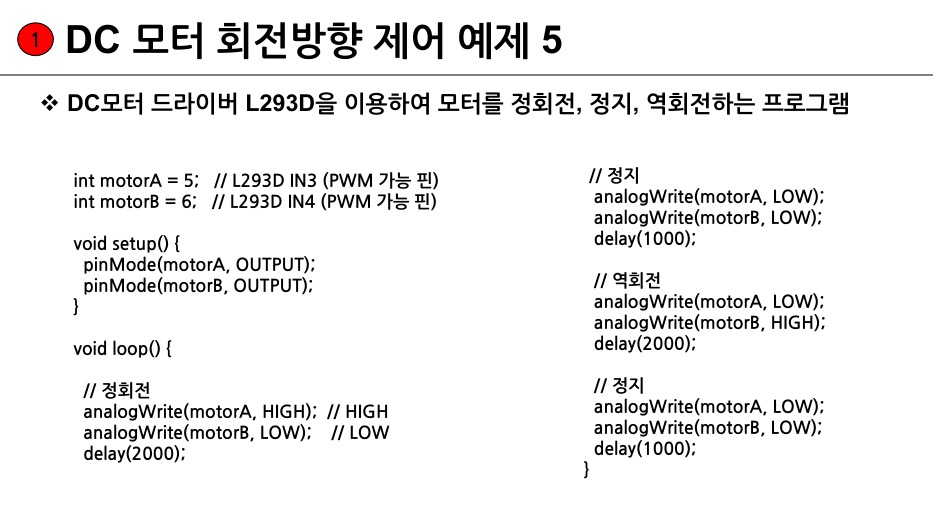
int motorA = 5; // L293D 입력 IN3
int motorB = 6; // L293D 입력 IN4
void setup() {
pinMode(motorA, OUTPUT);
pinMode(motorB, OUTPUT);
}
void loop() {
analogWrite(motorA, HIGH); analogWrite(motorB, LOW); delay(2000); // 다름 → 정회전 2초
analogWrite(motorA, LOW); analogWrite(motorB, LOW); delay(1000); // 같음 → 정지 1초
analogWrite(motorA, LOW); analogWrite(motorB, HIGH); delay(2000); // 반대로 다름 → 역회전 2초
analogWrite(motorA, LOW); analogWrite(motorB, LOW); delay(1000); // 정지 1초
}HIGH는 숫자로 1이다. 그래서 analogWrite(motorA, HIGH)는 사실 analogWrite(motorA, 1), 즉 1/255 세기다. 실제 보드에서는 모터가 거의 안 돌 수 있다. 의도대로 하려면 digitalWrite(motorA, HIGH) 또는 analogWrite(motorA, 255)를 쓴다. 시험에서 "analogWrite에 넣는 값의 범위"를 물으면 0~255라고 답한다.예제 6~9 — 앞 예제와 다른 점만
| 예제 | 쪽 | 새로 나온 것 | 핵심 코드 |
|---|---|---|---|
| 6 | p46~48 | 스위치 누르면 역회전 | digitalRead(4)로 스위치 상태 읽고 if/else로 방향 결정 |
| 7 | p49~52 | 키보드로 1=정회전, 2=역회전, 0=정지 | if (Serial.available()) → in_data = Serial.read() → if (in_data == '1'). 따옴표 '1'은 글자다 |
| 8 | p53~55 | 기울기 센서가 기울면 회전 | 스위치 대신 digitalRead(tiltPin). 구조는 예제 6과 같다 |
| 9 | p56~61 | 모터 2개 | L293D 한 칩으로 모터 2개(핀 4개). 같은 패턴을 두 번 쓴다 |
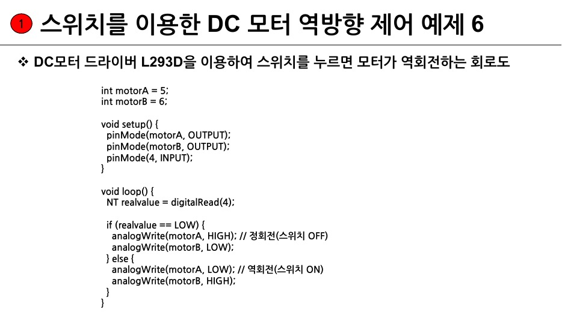
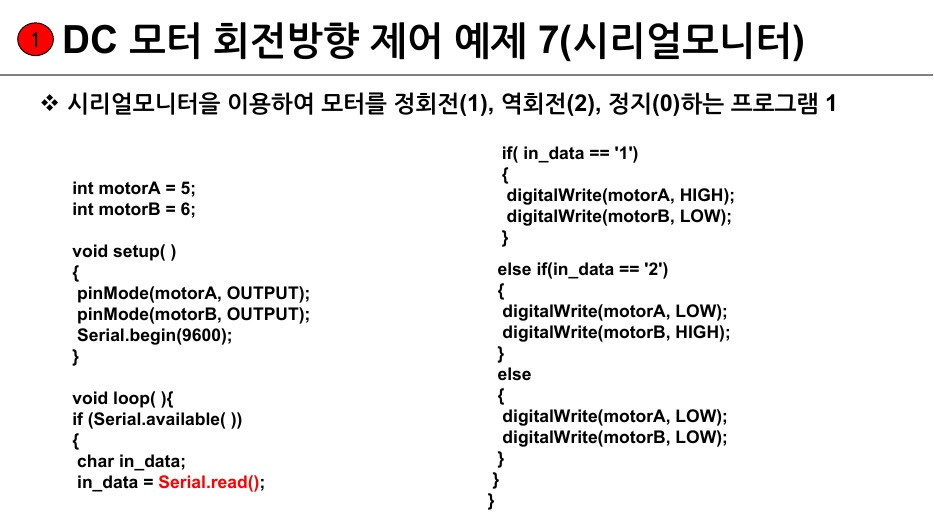
3. 서보 모터 — 원하는 각도로 가서 멈추는 모터 (p62~96)
서보 안에는 작은 DC 모터와 "지금 몇 도인지 재는 장치"가 들어 있어서, 목표 각도에 도착하면 스스로 멈춘다.
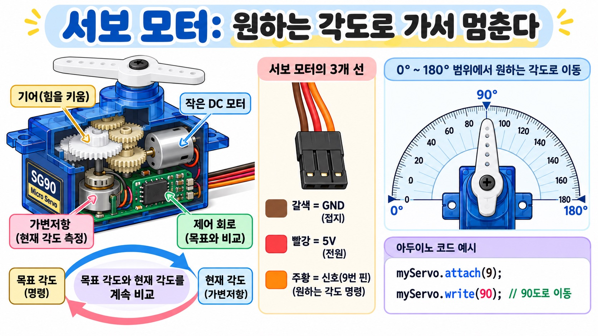
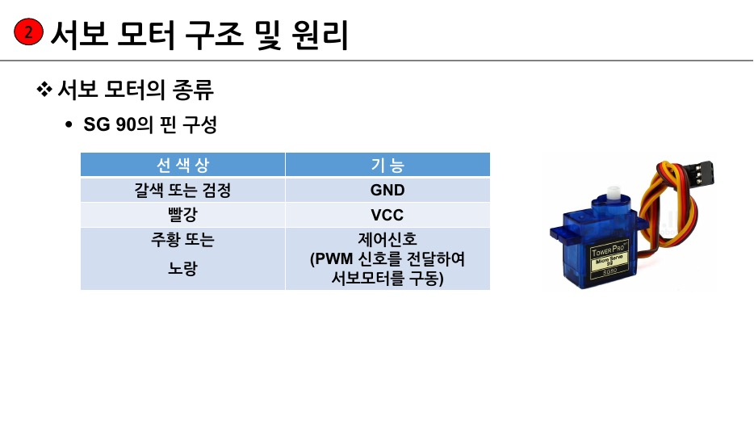
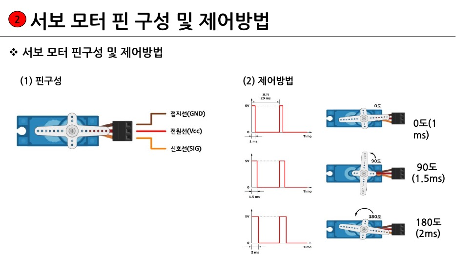
Servo 라이브러리 사용법 (p70~71) — 5줄이면 끝
#include <Servo.h> // 남이 만들어 둔 서보 제어 코드 묶음을 가져옴
Servo myServo; // 서보 하나를 "myServo"라는 이름으로 만듦
myServo.attach(9); // 9번 핀에 연결했다고 알려줌 (setup 안에서)
myServo.write(90); // 90도로 이동
int a = myServo.read(); // 지금 설정된 각도 읽기예제 1 (p69~73) — 1도씩 0→180→0
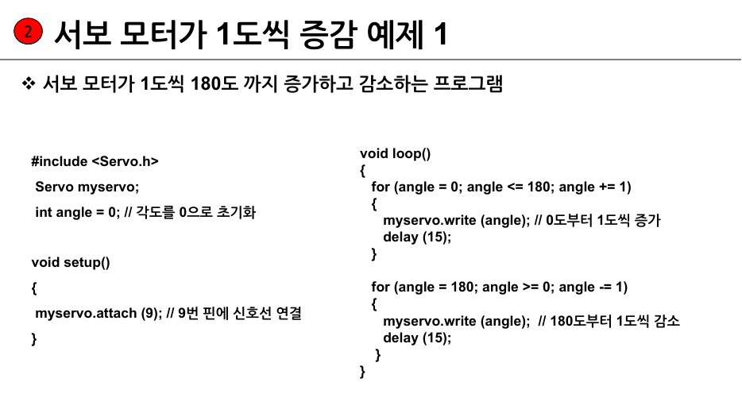
for (angle = 0; angle <= 180; angle += 1) { // angle을 0부터 180까지 1씩 올리며 반복
myservo.write(angle); // 그 각도로 이동
delay(15); // 조금씩 천천히 움직이게
}
for (angle = 180; angle >= 0; angle -= 1) { // 다시 180에서 0으로
myservo.write(angle);
delay(15);
}예측해 보기: angle += 1을 angle += 15로 바꾸면? → 15도씩 뚝뚝 끊어서 움직인다(예제 2와 비슷).
예제 3 (p77~82) — 가변저항으로 각도 조절 ★map 함수
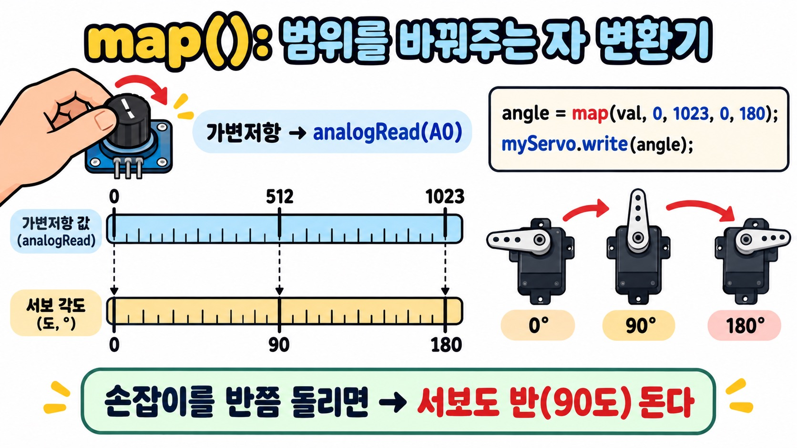
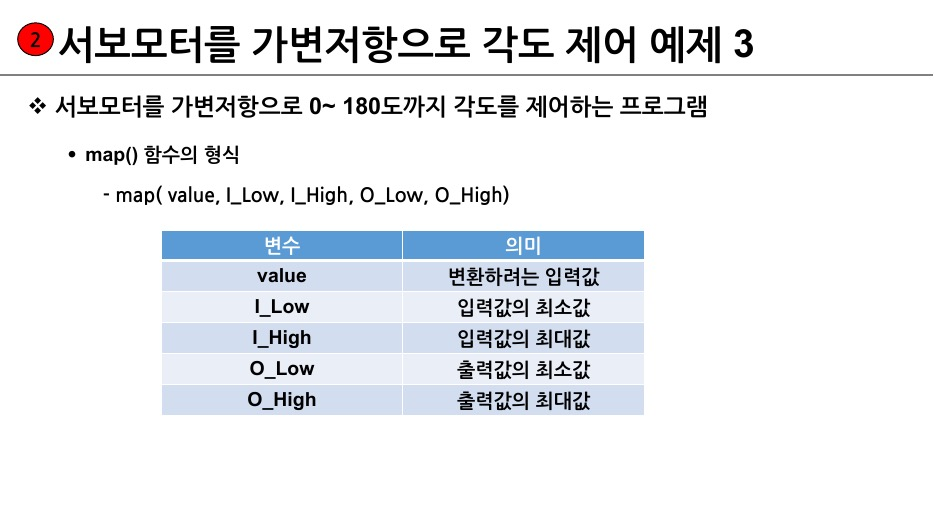
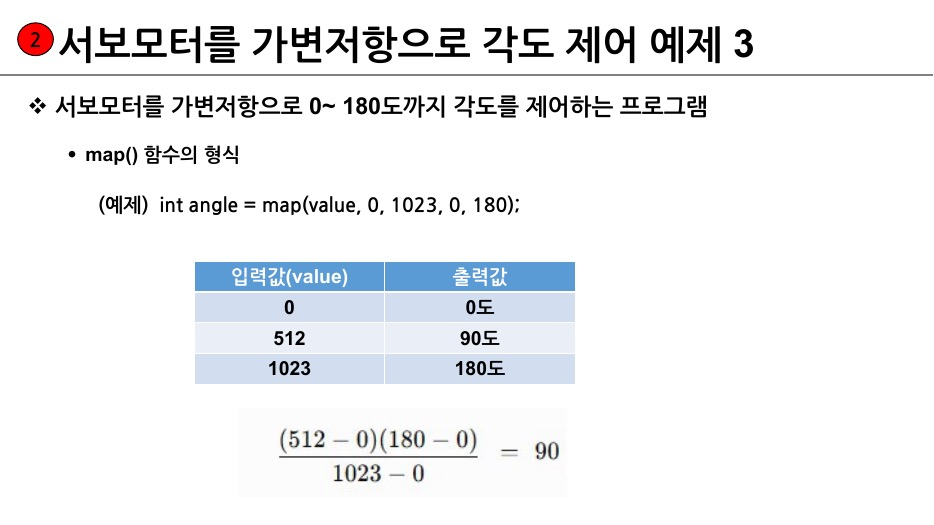
int value = analogRead(A0); // 가변저항 값 0~1023
int angle = map(value, 0, 1023, 0, 180); // 0~180도로 변환
myServo.write(angle);예제 2·4·5와 레포트 — 다른 점만
| 예제 | 쪽 | 새로 나온 것 |
|---|---|---|
| 2 | p74~76 | 키보드 'u'면 +15도, 'd'면 -15도. if (angle > 180) angle = 180;으로 범위 제한 |
| 4 | p83~86 | 각도마다 LED 하나씩 켜기 (digitalWrite(led1, HIGH)) |
| 5 | p87~94 | PIR 센서(사람의 체온 적외선 감지)가 사람을 보면 서보로 문 열기 |
| 레포트 7-5 | p95 | 토양수분센서 값이 낮으면(물 부족) 서보를 돌려 물 주기. 예제 3(analogRead) + 예제 5(if로 판단 후 서보 이동)를 합친 구조 |
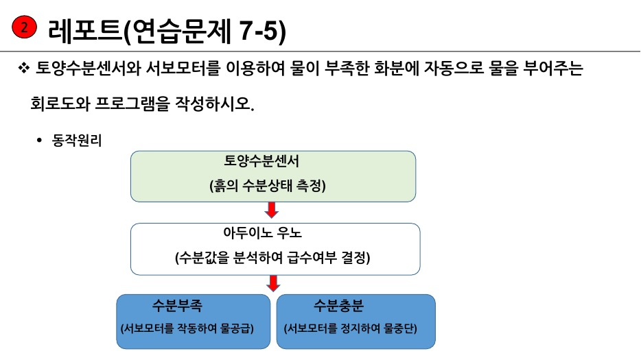
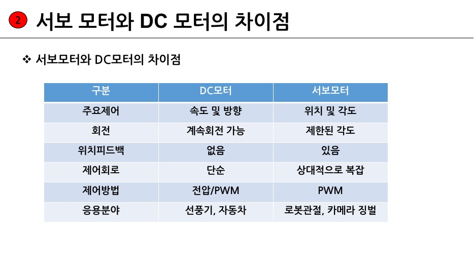
4. 스테핑 · BLDC — 정확히 한 칸씩, 그리고 브러시 없는 모터 (p97~129)
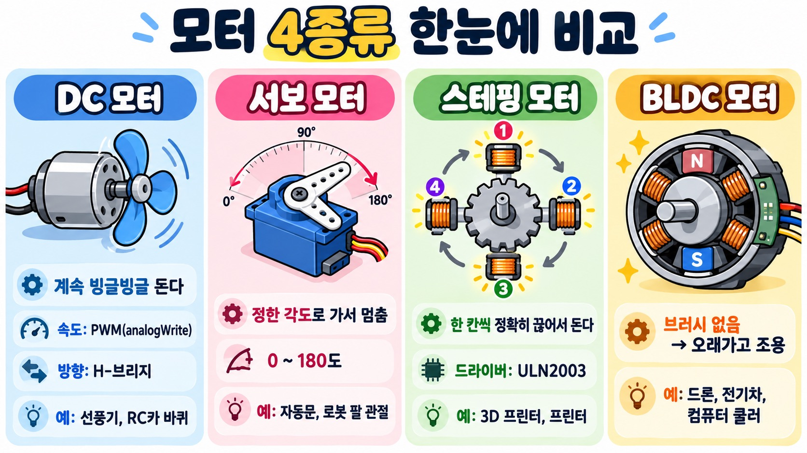
스테핑 모터 (p97~116)
신호(펄스)를 한 번 줄 때마다 정해진 각도만큼 딱 한 칸 돈다. 그래서 몇 번 줬는지만 세면 위치를 정확히 안다.
회전각 = 펄스 수 × 한 칸 각도. 한 칸이 1.8도면 200번 → 360도(한 바퀴).
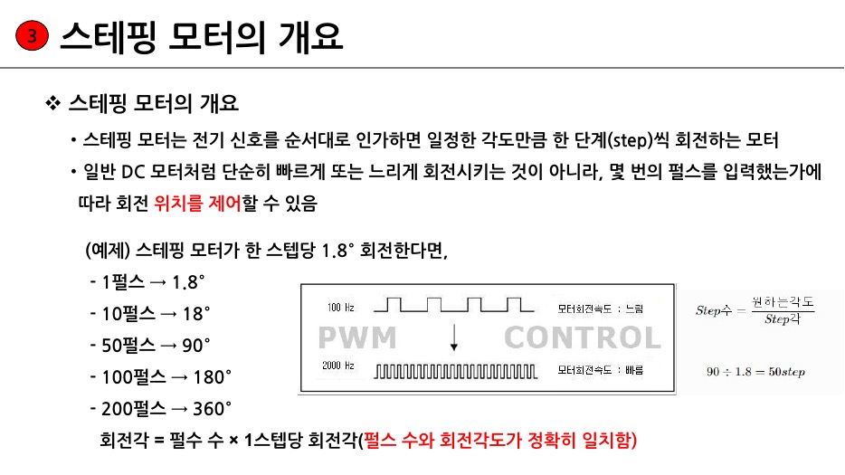
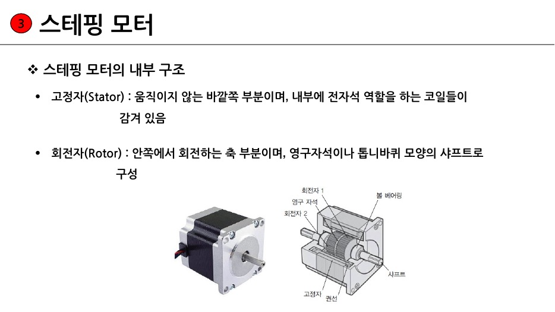
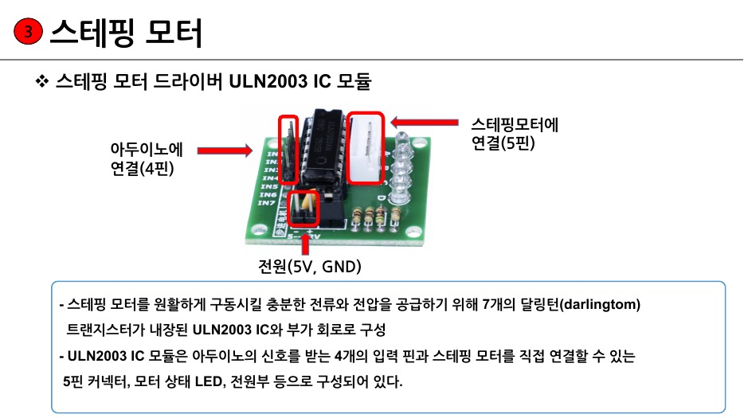
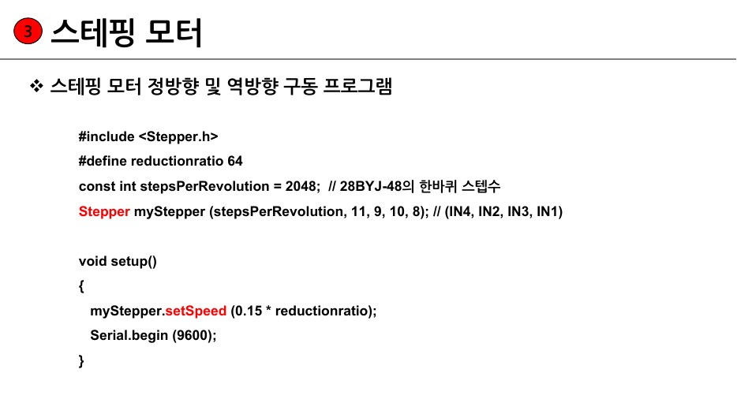
#include <Stepper.h>
const int stepsPerRevolution = 2048; // 28BYJ-48은 2048칸이 한 바퀴
Stepper myStepper(stepsPerRevolution, 11, 9, 10, 8); // 연결한 핀 4개
myStepper.setSpeed(0.15 * 64); // 속도 설정 (setup 안)
myStepper.step(stepsPerRevolution); // + 값: 한 바퀴 정방향
myStepper.step(-stepsPerRevolution); // - 값: 한 바퀴 역방향p108~115 산업용 스테핑 모터와 드라이버 사양은 표를 훑어만 본다. p116 서보와 스테핑 비교표는 꼭 본다.
BLDC 모터 (p117~129)
일반 DC 모터는 브러시(문지르는 부품)가 닳는데, BLDC는 브러시를 없애고 자석이 돌게 만들어서 오래 가고 조용하고 빠르다.
- 코일 세 개(U, V, W상)의 극(N/S)을 순서대로 바꿔서 가운데 자석을 끌어당기고 밀어내 돌린다.
- 자석이 지금 어디 있는지 알아야 다음 코일을 켤 수 있다 → 홀센서(자석의 N극/S극을 감지하는 센서)가 그 위치를 알려준다.
- 용도: 드론, 전기차, 컴퓨터 쿨러처럼 빠르고 오래 돌아야 하는 곳.
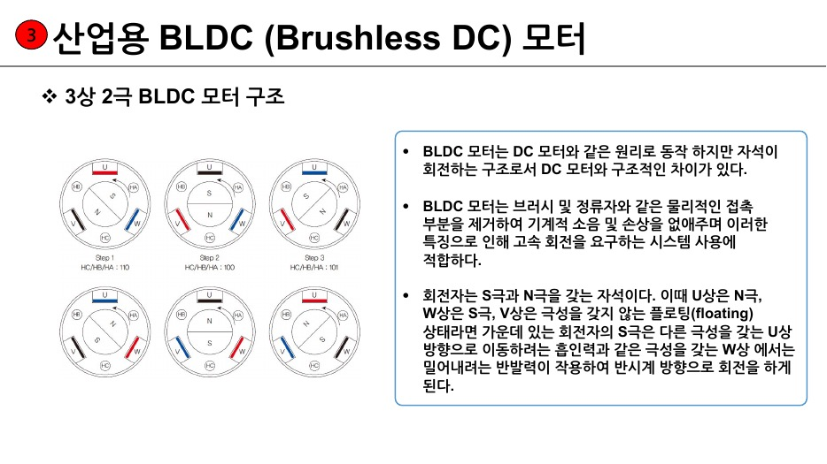
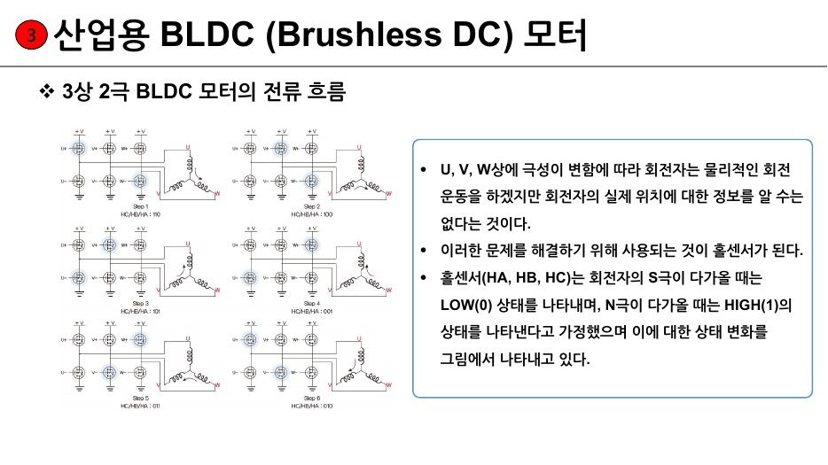